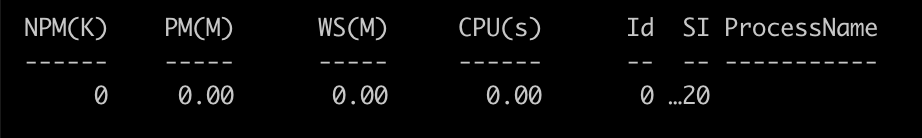

Create a file hello-world.ps1
x<# JavaScript uses /* comments */ for multiline comments Powershell uses <# comments #> for multiline comments#># Javascript uses // for single line comment# Powershell uses # for single line comment# JavaScript - writting console log# Console.log('Helllo' + ' World !')# Powershell - writting console logWrite-Output 'Hello' + ' World !'# Just like Javascript, double quotes are string too !Write-Output "Hello" + "World" + "Again !"# Javascript : file named as hello-world.js# Powershell : file named as hello-world.ps1# Javascript - running file (nodejs)# node hello-world.js# Powershell - running file (powershell)# ./hello-world.ps1What we learnt : Comments, string, console output and running a file.
Exercise :
xxxxxxxxxx# Variables start with $ and can be directly assigned values# Powershell # //Javascript$name = 'Rohit' # var name = 'Rohit'# Maps use "=" instead of ":" and ";" instead of ","# Powershell # //Javascript$players = @{ # var players = { 'Rohit' = 'batsman'; # 'Rohit' : `batsman`, 'Virat' = 'captain'; # 'Virat' : 'captain', 'Jaspreet' = 'bowler'; # 'Jaspreet' : 'bowler',} # };# Powershell # // Javascriptfunction getPlayer($name){ # function getPlayer(name){ return $players[$name] # reutrn player[name];} # }# No Parenthesis # // JavascriptgetPlayer 'Rohit' # getPlayer('Rohit');
xxxxxxxxxx# Powershell # Javascript$name = 'Rohit' # var name = 'Rohit'1 -eq 1 # 1 == 1 1 -neq 1 # 1 != 11 -gt 2 # 1 >= 2 1 -lt 2 # 1 < 21 -le 1 # 1 <= 1 2 -ge 1 # 2 >= 1 "" -is [String] # "" instanceof String$true # true $false # false$null # null-not $true # !true (not operator)
xxxxxxxxxx# In Javascript# var arrayOne = ['value-one', 'value-two', 1, false, null]# Creating array in Powershell$arrayOne = 'value-one', 'value-two', 1, $false, $null# Or user @() just like [] in Javascript$arrayTwo = @('value-one', 'value-two', 1, $false, $null)# Length of array$arrayOne.Count # Javascript - arrayOne.length # Get elemtn at index$arrayOne[2] # Same as Javascript# Get elements from index 2 to 3$arrayOne[1..4] # JavaScript - arrayOne.slice(1, 4)# Get index of element$arrayOne.IndexOf('value-two') # JavaScript - arrayOne.indexOf('value-two')# Check if array contains a value$arrayOne.Contains("value-two") # JavaScript - arrayOne.includes('value-two')# Filter element from array$arrayOne -ne "value-two" # JavaScript - arrayOne.filter(v => v !== 'value-two')# Concatenate array$superArray = $arrayOne + $arrayTwo # JavaScript = arrayOne.concaat(arrayTwo)
xxxxxxxxxx# For Loop - same as in Javascriptfor($i = 0; $i -le $array.Count; $i++){ Write-Output "$($array[$i])"}# Foreach loopforeach($word in $array){ Write-Output $word}# if else is as Javascriptif($age -gt 18){ Write-Output "pass"}elseIf(age -lt 18){ Write-Output "This never happens either"}else { Write-Output "This is the truth"}# Powershell # Javascript : switch($num){ # switch(num) 2 {Write-Output "one"} # case 1: console.log('one'); break; 3 {Write-Output "two"} # case 2: console.log('one'); break; default {Write-Output "none"}# default: console.log('none')}
Save following as hello.ps1
xxxxxxxxxxparam($name) # accept argument "name"$age = Read-Host "Enter your age" # asks user to enter a messageWrite-Output "$name is $age year old" # prints age and nameNow runt this as
xxxxxxxxxx./test.ps1 -name Rohit# Output# Enter your age: <enter age># Rohit is 32 year old
xxxxxxxxxx# create array of objects# search# sort# select
Thinks of these as pre defined function (though they are not). There are numerous such commandments, let look at some that show us processes running in the system. You can use them just like functions in the script, or like system command in powershell cli.
xxxxxxxxxx$process = Get-ProcessWrite-Output $process[0]Prints :

xxxxxxxxxxparam($sort = "Name", $search, $kill)$processes = Get-Process | Select-Object -Property Id,Name,Cpu if($kill){ Write-Host "Killing process with id : $kill" Stop-Process -Id $kill}if($search){ $processes = $processes | Where-Object -Property Name -eq $search}$processes = $processes | Sort-Object -Property $sort Write-Host $processes